Inside Task Run
The no-mistakes loop

● green / settled
◌ active work
· future stage
? red gate / ! repair
? branch
First green is a bootstrap. It includes both implementation work and refinement of the first executable verifier.